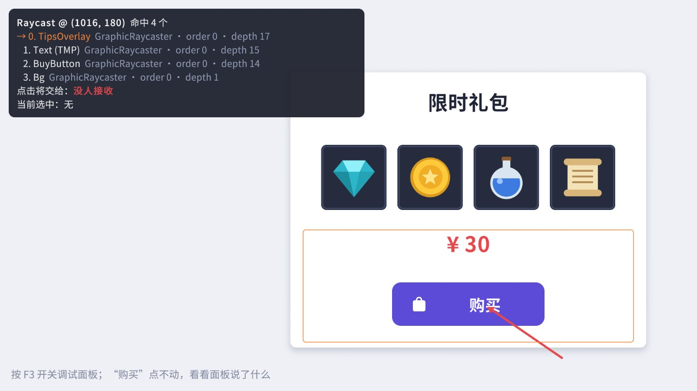
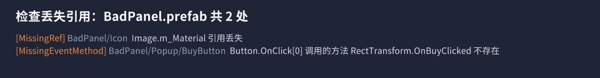
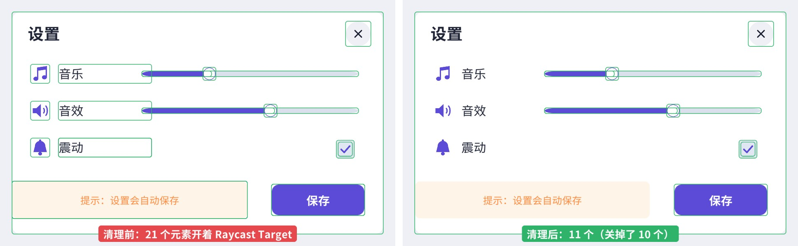
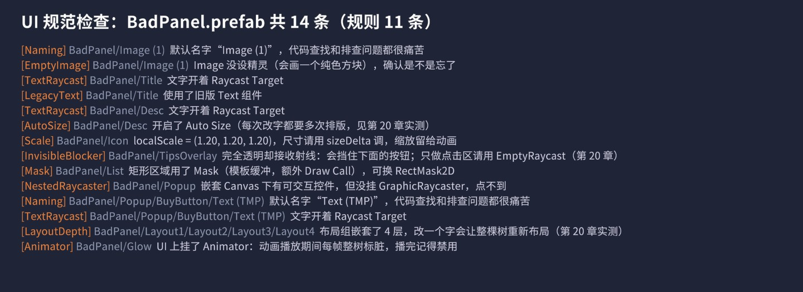
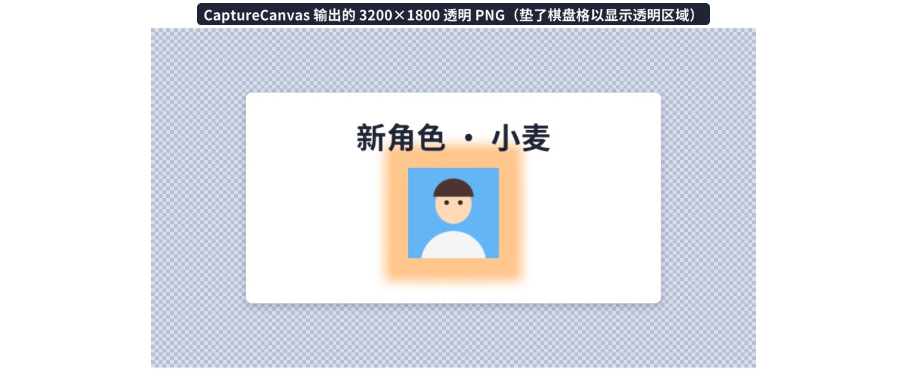

前面二十章讲的是“怎么做对”，这一章讲“做错了怎么办”和“怎么少做错”。先给出一张排查“点了没反应”的流程图和一个运行时射线调试器，然后是一组拿来就能用的编辑器工具——批量替换、丢失引用检查、Raycast Target 清理、预制体规范检查、高清截图，每个工具都在配套工程里对着真实的界面跑过。最后是三十条短小实用的技巧，以及 UGUI 和 UI Toolkit 的取舍。
UI 开发里被问得最多的一个问题就是“我的按钮点了没反应”。原因可能有十几种，但它们都能归到事件链路的某一环上（第 11 章）：输入 → InputModule → Raycaster 找到命中物体 → 沿父节点找到处理者 → 回调执行。顺着这条链从前往后查，每一步都有明确的检查方法，不用瞎猜：
逐条说明最常见的“坑位”：
interactable 关了按钮会变灰，比较好发现；父级 CanvasGroup 的 interactable = false 或 blocksRaycasts = false 也会让它失效，而外观可能没有任何变化。onClick.RemoveAllListeners()。如果按流程查完还是找不到原因，就用最朴素的二分法缩小范围：复制一份场景，把与问题无关的界面一半一半地删掉（或禁用），每删一次就测一次，直到问题消失——最后删掉的那一部分里一定有“凶手”。另一个方向是从零开始：新建一个空场景，只放 EventSystem、一个画布和这个按钮的预制体，能点就说明问题出在场景里的其他东西上，不能点就说明问题在预制体自身。这两种方法看起来笨，但比对着几百个物体凭直觉猜要快得多，而且一定能找到答案。
在动手写工具之前，先把 Unity 已经提供的几个入口用起来：
EventSystem.ToString()：当前选中物体，以及输入模块里每个指针的 pointerEnter、pointerPress、pointerDrag、当前射线结果等。鼠标移到按钮上看 pointerEnter 是不是它，点下去看 pointerPress 是不是它——前三步的问题基本都能看出来Intercepted Events选中任意 UI 物体，Inspector 底部的预览窗格里有一页 “Intercepted Events”，列出这个物体上每个组件实现了哪些事件接口（IPointerClickHandler、IDragHandler……）。想知道“这一下点击会被谁接住”时很有用Layout Properties同一个预览窗格里的另一页，显示该元素的 Min / Preferred / Flexible 尺寸以及由哪个组件提供（第 10 章的布局排查利器）Scene 视图的 Raycast 框选中带 Graphic 的物体时，Scene 视图里会额外画一个细框（UI Collider 颜色），这就是考虑了 Raycast Padding 之后实际的射线检测范围（GraphicEditor 里绘制）；Inspector 的 Raycast Target 旁边可以展开 Raycast Padding 编辑目标：游戏运行时（包括真机上）按 F3 打开一个面板，实时列出鼠标或手指下面所有被射线命中的 UI 元素，按 EventSystem 的排序从上到下排列，并告诉你“这一下点击最终会交给谁”；同时在最上面的命中物体上套一个高亮框。
EventSystem 的预览只显示最上面那一个命中物体，而排查“被谁挡了”时，我们需要看到完整的命中列表。核心只有两步：
EventSystem.RaycastAll：这和 InputModule 处理点击时用的是同一个方法、同一套排序规则（先按 Raycaster 的优先级，再按画布的 sortingLayer / sortingOrder，再按 depth，最后按距离），所以列表的第一项就是会收到事件的那个物体。ExecuteEvents.GetEventHandler<T> 找处理者：点击事件从最上面的命中物体开始，沿父节点向上找第一个实现了 IPointerClickHandler 的组件（第 11 章的“冒泡”）。如果找不到，显示“没人接收”。按下（IPointerDown）的处理者单独列出，因为它和点击的处理者可能不同（比如 ScrollRect 里的按钮）。
配套场景复现了这个经典 bug：运行后点“购买”没有反应，按 F3 看一眼就知道原因。修复方法是关掉 TipsOverlay 的 Raycast Target，或者把它挪到按钮下面。调试器建议做成 Development Build 才编译进来的工具（用 #if DEVELOPMENT_BUILD || UNITY_EDITOR 包住创建它的代码），QA 测试时遇到点不动的情况可以直接截图发给开发。
canvasRenderer.cull 为 true，不参与检测）、depth 是否为 -1（还没被画布处理过，比如刚刚激活的那一帧）。射线调试器回答的是“这一刻鼠标下面有什么”，有些问题则需要看“一连串事件的顺序”：拖拽为什么没有触发、为什么按下之后没有抬起、为什么 ScrollRect 里的按钮点击会被吞掉。这时最有效的办法是在可疑的物体上临时挂一个“事件日志”组件：实现第 11 章列出的全部指针接口（Enter、Exit、Down、Up、Click、InitializePotentialDrag、BeginDrag、Drag、EndDrag、Drop、Scroll），每个回调里打印一行带帧号的日志。看一眼 Console 就能知道：按下之后是不是先触发了 InitializePotentialDrag、拖动距离超过 EventSystem.pixelDragThreshold 之后点击是不是被取消了、抬起时 eligibleForClick 是否已经变成 false。要注意的是，挂了这个组件之后它本身也会“接住”事件——比如它实现了 IDragHandler，父节点的 ScrollRect 就收不到拖拽了——所以它只能用来观察，观察完就删掉。
3D 物体点不到时排查思路一样，只是链路换成 PhysicsRaycaster：相机上有没有 PhysicsRaycaster、物体有没有 Collider、Collider 所在的 Layer 是否在 Event Mask 里、是不是被 UI 挡住（UI 的 GraphicRaycaster 通常排在 PhysicsRaycaster 前面）。射线调试器同样能列出 PhysicsRaycaster 的命中结果，模块名一栏会显示出来。
接下来的几个工具都是“对一批 UI 做检查或修改”，它们共享一个骨架：收集目标 → 逐个处理 → 改了就保存 → 结果显示在窗口里，点一下能定位。目标有两种来源：Project 窗口里选中的预制体（或文件夹，递归包含里面的所有预制体），或者当前打开的场景。
处理预制体最稳妥的方式是 PrefabUtility.LoadPrefabContents：它在一个隔离的预览场景里把预制体内容加载出来，修改后用 SaveAsPrefabAsset 写回，最后 UnloadPrefabContents 释放。整个过程不进入 Prefab Mode、不影响当前场景，也能正确处理嵌套预制体和预制体变体：
几个要点：
SaveAsPrefabAsset 会重新序列化文件，即使内容没变也可能产生版本控制里的差异；action 返回 false 就不保存。Undo.RecordObject，改的是预制体实例的话再调用 PrefabUtility.RecordPrefabInstancePropertyModifications，最后把场景标脏，否则保存场景时修改会丢失。处理大量资源时还有两个提速技巧：一是把整批修改包在 AssetDatabase.StartAssetEditing() 和 StopAssetEditing() 之间，Unity 会把期间产生的导入合并到最后统一处理，几百个文件的批量修改能从几分钟缩短到几十秒（同样要放在 try / finally 里，否则中途出错会让资源数据库一直处于暂停导入的状态）；二是菜单项配一个验证函数（[MenuItem(..., true)]），没有选中合适对象时菜单显示为灰色，避免误操作。
检查类工具的结果统一用一个 UIIssue（规则名、预制体路径、物体路径、描述）表示，显示在一个简单的 EditorWindow 里，每条前面有“定位”按钮。所有工具代码都在 Ch21/Editor/ 下，在配套工程里编译通过。
场景：美术换了一套字体，几百个预制体里的 TMP 文字都要换；或者两张重复的图标要合并成一张，所有引用旧图的地方都要换成新图。手工改既慢又容易漏。
菜单 打开窗口：选择替换类型（TMP 字体 / 旧版字体 / 精灵）、范围（选中的预制体 / 当前场景）、源和目标，先“预览”看会改多少处，再“执行替换”。核心逻辑：
两个容易漏的细节：
fontSharedMaterial 是单独存储的，只改 font 的话，材质还是旧字体的（引用着旧字体的图集纹理），结果可能是乱码或者一片方块。换成新字体的默认材质最安全；如果原来用的是描边、阴影等材质预设，需要按名字映射到新字体对应的预设上。spriteState 里还存着高亮、按下、选中、禁用四张图。更彻底的做法是用 SerializedObject 遍历所有对象引用属性，把等于源精灵的都替换掉——和下一个工具“检查丢失引用”的遍历方式相同。扩展方向：如果项目用了很多 TMP 材质预设（描边、阴影、发光），可以让工具按“预设名的后缀”自动映射——旧字体的 Title_Outline 预设换成新字体下同名的预设，找不到同名的再退回默认材质，并在结果里列出这些“退回默认”的文字，让美术逐个确认。另一个常见需求是反向查找：“这张图被哪些预制体用到了？”——Project 窗口里右键资源选 只能查当前场景；查整个工程可以用工具遍历所有预制体，或者更粗暴但很快的做法：读出资源的 GUID（AssetDatabase.AssetPathToGUID），在所有 .prefab / .unity 文件的文本里搜索这个 GUID（需要把 Asset Serialization 设成 Force Text，这也是 Unity 工程的推荐设置）。
场景：删除了一个脚本、重命名了一个类、移动或删除了一张图，打开预制体时 Inspector 里出现 “Missing (Mono Script)”、“Missing (Sprite)”。更隐蔽的是 OnClick 里绑定的方法被改了名——Inspector 里显示 “Missing” 只有点开那个按钮才能看到，运行时点击直接没反应，也不报错。这个工具一次把三类问题都找出来：
GameObjectUtility.GetMonoBehavioursWithMissingScriptCount 直接给出数量；遍历组件时这些组件会是 null，要跳过。objectReferenceValue 都是 null。区别在 objectReferenceInstanceIDValue：“None”（从未赋值）是 0；曾经引用过某个资源、现在资源不在了的，序列化数据里还留着那个资源的标识，实例 ID 不为 0。这是判断 “Missing” 的通用技巧。UnityEventBase 类型的字段，逐个检查持久化回调（Inspector 里绑定的那些）：目标对象还在不在、目标类型上还有没有这个方法（属性的 setter 在 UnityEvent 里以 set_属性名 的形式存储，要单独处理）。为了验证工具，Shots 代码生成了一个问题很多的 BadPanel.prefab：给其中一张图引用一个材质再把材质资源删掉，给按钮的 OnClick 写入一个并不存在的方法名 OnBuyClicked。工具的实际输出：

引用丢失之后怎么修？如果资源只是被移动或改了名、GUID 没变（在 Unity 里移动、重命名不会改 GUID），引用会自动恢复；只有资源被删除、或者在 Unity 外面移动导致 .meta 文件丢失、重新生成了新的 GUID 时，引用才会真正丢失。所以最好的修复往往是从版本控制里找回原来的 .meta 文件，而不是逐个重新拖引用。这也是团队规范里一定要写上“不要在资源管理器里直接移动 Unity 资源”的原因。
建议把它接进构建流程：打包前自动扫描所有 UI 预制体，有丢失引用就让构建失败。比起上线后玩家反馈“某个按钮点不了”，在构建机上拦下来的成本低得多。
第 20 章实测过：射线检测的耗时和开着 Raycast Target 的图形数量成正比，而 Unity 新建的 Image、TMP 文字默认都开着。这个工具按一套保守的规则，把“肯定不需要接收点击”的图形全部关掉：
规则的设计思路是拿不准的一律保留，宁可少关几个，也不能把能点的东西关坏：
IEventSystemHandler（所有事件接口的基接口）。TMP 的子网格对象（TMP_SubMeshUI，字体回退或多图集时自动生成）属于文字，一律关掉。修改支持撤销：

清理之后怎么确认没有关坏？最可靠的办法是把清理工具和第 20 章的数据结合起来：清理前后各跑一遍界面的自动化点击测试（逐个点击所有 Selectable，检查回调是否触发）；手工验证时，打开射线调试器把每个按钮、滑块、开关都摸一遍，看“点击将交给”是否都是预期的控件。规则 ⑤（窗口底板）尤其要注意：点弹窗的空白处，命中列表的第一项应该是底板，而不是后面界面上的东西。
菜单有两个入口：（Hierarchy 里选中物体右键，作用于选中物体及子物体），（Project 里选中预制体或文件夹）。规则肯定无法覆盖所有项目的写法——比如你的项目约定“纯文字的超链接也要能点”，那就在规则里加一条“带 TMP 链接标签的文字保留”。工具的价值不在于规则多完美，而在于把团队约定固化下来、每次都一样地执行。
每个团队都有一些 UI 约定：不许用默认名字、统一用 TMP、文字不开 Raycast Target、矩形裁剪用 RectMask2D、布局组不超过三层……写在文档里的约定一定会被违反，写成代码的检查才会被执行。规则用一个简单的结构描述，每条规则是一个“传入 GameObject、返回问题描述或 null”的函数：
对同一个 BadPanel.prefab 运行的实际结果：

规则里有几条直接来自前几章的实测结论（Auto Size、布局嵌套、Animator、透明挡板），这正是“性能优化”能长期保持的方式：把一次性的优化经验变成自动化检查，新人做的界面也不会再踩同样的坑。规则可以有不同的严重级别：命名问题只是警告，嵌套 Canvas 缺 Raycaster 这种“一定会出 bug”的问题应该在构建时报错。要接入构建流程，可以实现 IPreprocessBuildWithReport，在打包前扫描指定目录，发现错误级问题就抛异常中止构建。
商店页面的宣传图、给策划的界面效果图、写文档用的插图，经常需要比屏幕更高的分辨率，或者透明背景。两种做法：
ScreenCapture.CaptureScreenshot(path, superSize)，superSize = 2 就是 Game 视图分辨率的两倍。它包含 Overlay 画布，最省事；注意截图在本帧渲染结束后才写盘，调用之后马上读文件是读不到的。做法是建一台临时相机，把画布临时改成 Screen Space - Camera 挂到它上面（Overlay 画布不经过相机，无法渲染到纹理），渲染到指定尺寸的 RenderTexture，读回像素存成 PNG，最后把画布的设置原样恢复。三个细节：
Handle()，否则截出来的界面大小不对。
CaptureCanvas 还有一个很有价值的用途：界面的视觉回归测试。把每个重要界面在固定分辨率下截一张“基准图”存进版本控制，每次改动后自动重新截图、逐像素比较，差异超过阈值就报警。字体资源被替换、图集打包参数改了、某个锚点被误拖，都会在这一步被发现。本书所有配图就是用同样的思路（ShotRunner 在批处理模式下逐个搭景截图）自动生成的，任何一处代码改动之后重新跑一遍，所有截图都会随之更新。
菜单在 下，截图保存在工程根目录的 Screenshots/ 文件夹里（不在 Assets 下，不会被导入）。
上面的工具都要人去点菜单。比工具更好的，是让问题根本不产生，或者在产生的那一刻就被发现。Unity 编辑器提供了几个很适合做这件事的钩子：
ObjectFactory.componentWasAdded 事件在通过编辑器（菜单、Add Component）添加组件时触发。可以在这里把新建的 TMP 文字、装饰 Image 的 raycastTarget 默认关掉——从源头上减少需要清理的 Raycast Target。注意它只对编辑器操作生效，代码里 AddComponent 不会触发保存预制体时检查PrefabStage.prefabSaving 在 Prefab Mode 里保存时触发，可以在这里跑一遍规范检查，有错误级问题就弹窗提醒。比“提测前统一检查”更早发现问题，改起来也最便宜导入资源时设置AssetPostprocessor.OnPreprocessTexture：放进 UI 目录的图片自动设成 Sprite、关闭 Mipmap、设置压缩格式，并按目录名分配进对应的图集。本书配套工程的 BookSpriteImporter 就是这种做法构建前检查IPreprocessBuildWithReport.OnPreprocessBuild：打包前扫描所有 UI 预制体的丢失引用和规范问题，有错误就抛 BuildFailedException 中止构建。持续集成的构建机上跑一遍，问题不会流到测试和玩家手里一个经验：自动化检查的规则要少而准。报一百条警告没人看，报三条“一定会出 bug”的错误大家都会修。先从最痛的问题开始（丢失引用、嵌套画布缺 Raycaster、透明挡板），确认误报率很低之后再逐步加规则。规则本身也要像业务代码一样维护：每条规则写清楚“为什么”（最好附上对应的实测数据或事故记录），新人看到报错时才知道该怎么改，也才会认同这条规则，而不是想办法绕过它。
除了“点了没反应”，下面这些症状在 UGUI 开发里也很常见。表里给出最可能的原因和对应的章节，排查时可以先对号入座：
| 症状 | 最可能的原因 | 处理 |
|---|---|---|
| Scene 里看得到，Game 里看不到 | Camera 模式画布没指定相机或 Plane Distance 超出相机远裁剪面；World Space 画布在相机背后；元素 alpha 为 0 或在 CanvasGroup alpha 为 0 的父节点下 | 第 1、2 章；用射线调试器看它是否被命中 |
| 文字显示成方块 | 字体资源里没有这个字：动态字体的源字体不含该字形、静态字库没打进去、没配置 Fallback | 第 5 章；第 19 章的字形覆盖检查 |
| 图片发糊 | 图片的显示尺寸远大于原图；导入设置开了压缩或 Max Size 太小；Canvas Scaler 参考分辨率太小导致整体放大 | 第 2、4 章 |
| 图片边缘有一圈杂色或白边 | 图集 Padding 太小，相邻精灵的像素被采样进来；或者导入时没勾 Alpha Is Transparency | 把 Padding 设成 4 以上；第 4 章 |
| 滚动列表拖不动 / 一拖就弹回 | Content 的尺寸没有超过 Viewport；列表项上的按钮吞掉了拖拽事件（自定义了 IDragHandler 却没转发） | 第 9、11 章 |
| 弹窗打开后还能点到后面的按钮 | 弹窗没有全屏的底板接收射线，或者底板的 Raycast Target 被清理工具关掉了 | 加一个全屏 EmptyRaycast 当遮挡层 |
| Mask 不生效 | Mask 的 Graphic 被删掉或 alpha 为 0 且没勾 Show Mask Graphic 以外的设置；自定义 Shader 没有 Stencil 属性 | 第 14 章 |
| 界面打开时闪一下、布局跳一下 | 布局在第一帧还没算完，读到了旧尺寸；ContentSizeFitter 的结果下一帧才生效 | 打开前 ForceRebuildLayoutImmediate；第 10 章 |
| 按钮点一次触发两次 | 同一个回调既在 Inspector 里绑了，又在代码里 AddListener；或者界面重复打开时又 AddListener 了一次 | 代码绑定放在 Awake，只绑一次 |
| 手机上输入框被键盘挡住 | 系统软键盘覆盖在游戏画面上，Unity 不会自动上移界面 | 读 TouchScreenKeyboard.area 把面板上移；第 8 章 |
| 切换场景后 UI 报 MissingReferenceException | 静态事件（如本地化的 Changed）持有已销毁界面的回调；DontDestroyOnLoad 的界面引用了旧场景里的物体 | OnDisable 里退订；第 19 章 |
| 界面静止时 CPU 仍然很高 | 有元素每帧被标脏：Animator、每帧赋值、每帧改 RectTransform | 第 20 章的 RebuildWatcher |
下面这些技巧都很短，但每一条都在实际项目里帮我省过时间。按“编辑器操作 → 布局与显示 → 代码 → 性能与工程”大致分组。
t:Button 筛出所有按钮，t:Image、t:TextMeshProUGUI 同理；配合多选可以一次改一批属性。Ignore Layout，它就能自由摆放（比如列表项右上角的角标）。raycastPadding，负值向外扩；或者在按钮下面放一个 EmptyRaycast（第 20 章），不要垫透明图片。Preserve Aspect；要“铺满并裁掉多余部分”，用 AspectRatioFitter 的 Envelope Parent + 外层 RectMask2D（第 19 章）。Pixels Per Unit Multiplier，大于 1 时边框按比例变细（第 4 章）。Line Spacing 或 Margins。GetWorldCorners 再用 RectTransformUtility.WorldToScreenPoint 转换四个角（本章调试器的高亮框就是这么做的）。int k = i; btn.onClick.AddListener(() => Select(k));（第 6 章的闭包陷阱）。SetIsOnWithoutNotify / SetValueWithoutNotify / SetTextWithoutNotify，从数据刷新界面时用它们，避免“界面改数据、数据又改界面”的循环。LayoutRebuilder.ForceRebuildLayoutImmediate(rt)，或者等到下一帧；直接读拿到的是旧值（第 10 章）。EventSystem.current.IsPointerOverGameObject()，触摸时要传入 fingerId。EventSystem.current.SetSelectedGameObject(go)，手柄导航的界面打开时一定要设一个初始选中项（第 6 章）。Time.unscaledDeltaTime，暂停游戏（timeScale = 0）时界面动画照常播放。worldCamera。传错了不会报错，只会算出一个离谱的位置——这是坐标转换类 bug 的头号原因。Btn_Buy、Txt_Price、Img_Icon。不只是为了代码查找（第 16 章的自动绑定靠它），出问题时日志和调试器里显示的也是名字。Unity 现在有两套运行时 UI：本书讲的 UGUI，和基于 UXML / USS 的 UI Toolkit（第 1 章介绍过）。Unity 官方的方向是让 UI Toolkit 逐步成为主力，编辑器界面已经大量迁移到了 UI Toolkit。那新项目该选哪个？下面是我在 2022.3 LTS 这个时间点的看法（UI Toolkit 迭代很快，具体能力以你使用的版本为准）：
| 维度 | UGUI | UI Toolkit（运行时） |
|---|---|---|
| 工作方式 | GameObject + 组件，在 Scene 里所见即所得地摆 | UXML 描述结构、USS 描述样式（类似 HTML + CSS），UI Builder 可视化编辑 |
| 布局 | 锚点 + 布局组，复杂响应式布局较繁琐 | Flexbox，响应式布局自然得多 |
| 样式复用 | 靠预制体和代码，统一换肤较麻烦 | USS 选择器、变量，换肤和主题切换是强项 |
| 与 3D / 特效混合 | 成熟：World Space 画布、Camera 模式与粒子排序、自定义 Shader（第 14、19 章） | World Space 支持在较新版本才逐步加入；自定义 Shader 与粒子混排受限 |
| 动画 | Animator、代码补间、第三方补间库生态丰富 | USS Transition 做简单过渡很方便，复杂动画需要代码 |
| 大量元素性能 | 需要动静分离、图集等手工优化（第 20 章） | 渲染管线为大量元素设计，ListView 自带虚拟化 |
| 生态与资料 | 十年积累，插件、教程、现成方案极多 | 较新，资料和插件相对少 |
| 适合 | 游戏内 HUD、强美术表现、需要和 3D/特效深度混合的界面；已有 UGUI 积累的团队 | 编辑器扩展、工具类应用、数据密集的界面（设置、背包表格、调试面板）；从 Web 前端转过来的团队 |
具体到 2022.3 LTS，运行时 UI Toolkit 有几处需要提前评估的限制：不能像 UGUI 那样给单个元素指定任意的自定义 Shader 做溶解、流光这类效果；没有内置的 World Space 面板（只能渲染到 RenderTexture 再贴到 3D 物体上，交互要自己转发）；粒子特效无法直接插在两个元素之间；Mask 只支持矩形和圆角裁剪。这些限制在更新的 Unity 版本里正在逐步解决，如果你的项目准备升级到 Unity 6 或更高版本，值得重新评估一次。反过来，如果界面以表格、表单、列表为主，这些限制几乎不会碰到，UI Toolkit 的开发效率优势会非常明显。
两者可以共存：同一个项目里，游戏 HUD 用 UGUI，设置界面、调试控制台用 UI Toolkit，完全可行（注意两套事件系统的协作：场景里有 UGUI 的 EventSystem 时，UI Toolkit 的面板通过 PanelEventHandler / PanelRaycaster 接入同一个 EventSystem，com.unity.ugui 的 Runtime/EventSystem/UIElements/ 目录下就是这部分代码）。
关于性能，常听到“UI Toolkit 比 UGUI 快”的说法。在大量元素、频繁变化的场景下，UI Toolkit 的渲染器确实做了很多针对性的设计（比如按需更新、统一的着色器减少状态切换），ListView 也自带虚拟化；但 UGUI 经过第 20 章那些手段优化之后，绝大多数游戏界面也完全能跑得很好。选型时性能通常不是决定因素，团队熟悉程度、美术表现需求、与 3D 的混合程度更重要。如果真的要比，就用第 20 章的方法在目标设备上对你的真实界面做一次实测，而不是相信任何一方的宣传。
还有一点常被忽视：美术工作流。UGUI 的界面在 Scene 里直接摆，美术可以自己拼界面、调动画；UI Toolkit 的 UXML / USS 更接近前端开发的工作方式，对“程序拼界面、美术出图”的团队很友好，但对习惯了“美术自己在编辑器里拼”的团队是一个不小的转变。迁移前和美术同事一起试做一两个界面，比看任何对比表都有用。
如果决定把部分界面从 UGUI 迁到 UI Toolkit，建议：
GetComponent<Text>()，先在 UGUI 里重构一遍再迁。clicked 事件；ScrollRect + 循环列表 → ListView；CanvasGroup.alpha → opacity；预制体 → UXML 模板（VisualTreeAsset）。UnityEditor.Selection.activeGameObject，记得 #if UNITY_EDITOR）。IPreprocessBuildWithReport，在打包时发现错误级问题就中止构建。